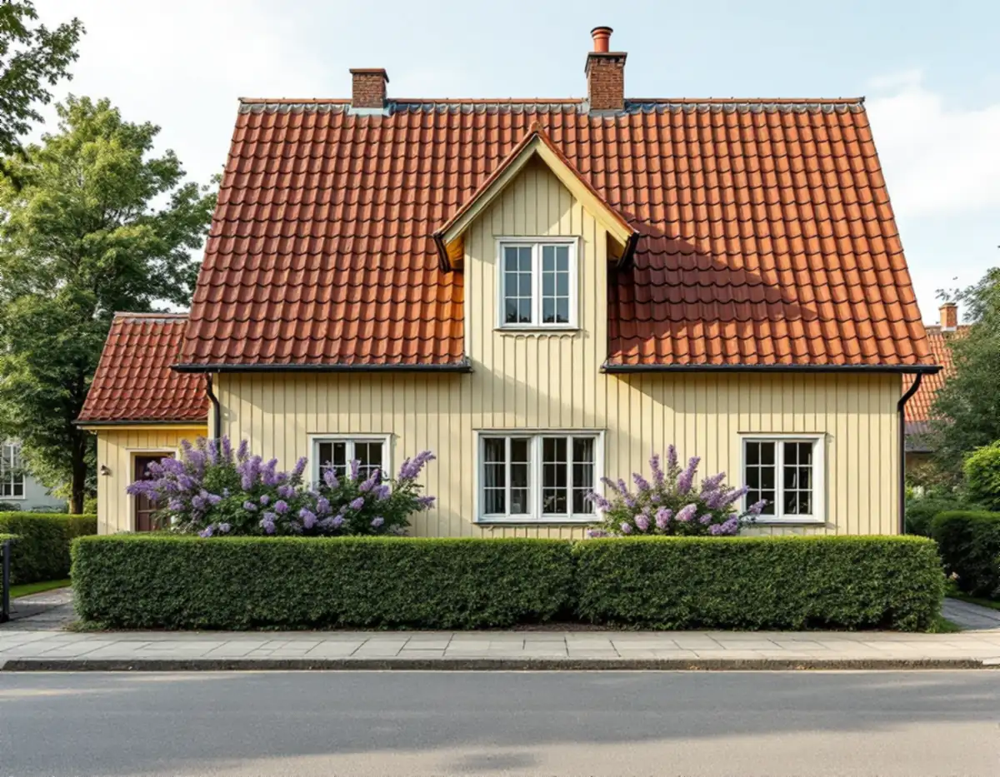
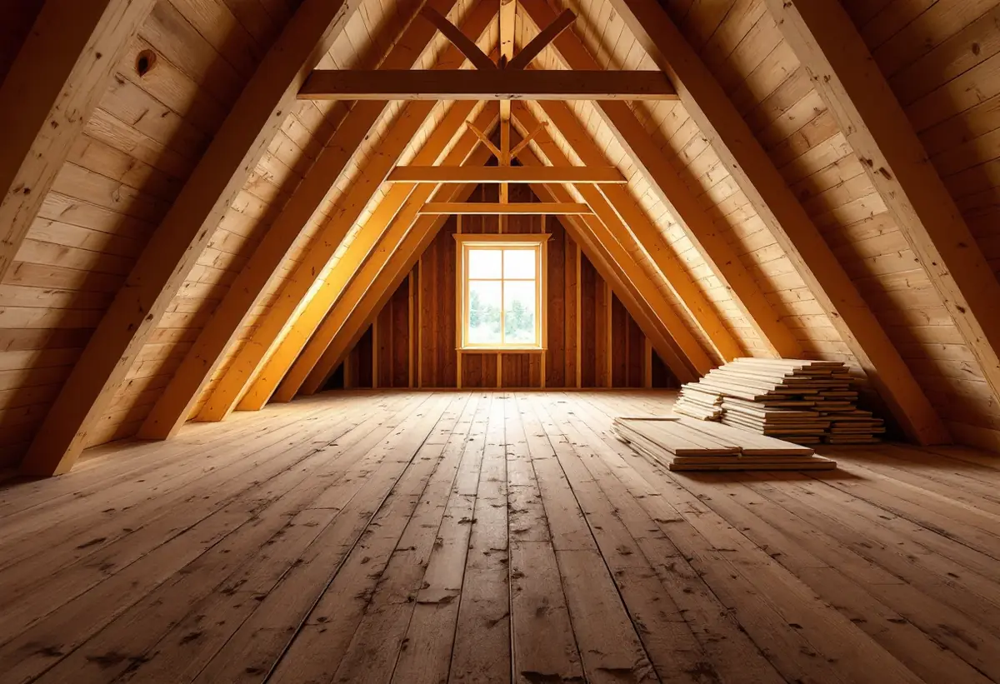

Platsbesök
Vi går igenom vind, källare och väggar och tittar på taket utifrån.
En villa i Bromma kan ha mer yta innanför väggarna än vad som används i dag: en kall vind under det branta taket, en källare eller en planlösning från en annan tid. Geal Entreprenad AB tar sådana ombyggnader som total entreprenad – från ritningar och handlingar till färdiga rum – och här går vi igenom vad Stockholms stad kräver när man bygger om inifrån.

Stadens vägledning Varsam utveckling av småhus- och villaområden beskriver hur trädgårdsstäderna i Äppelviken, Ålsten och Smedslätten tillkom under 1920-talet. I bland annat Nockeby, Höglandet och Ulvsunda blev husen enkla volymer i ett och ett halvt plan med branta sadeltak i rött tegel och små takkupor mitt på långsidorna. I de tidiga trädgårdsstäderna var huvuddelen friliggande enfamiljshus i ett plan med delvis inredd vind.
Vägledningen konstaterar också att många av husen har förändrats invändigt och byggts till genom åren. För den som vill ha fler rum utan att bygga ut på tomten är det därför ofta vinden, källaren eller väggarna mellan rummen som är frågan. Det är ett annat slags projekt än en tillbyggnad: volymen är densamma, men stommen, brandskyddet och installationerna berörs.

Ska en bärande vägg tas bort eller ett bärande bjälklag öppnas för en trappa krävs enligt Stockholms stad en anmälan, och arbetet får börja först när startbeskedet har kommit. Staden påpekar att den inte kan hjälpa dig att avgöra om åtgärden påverkar den bärande konstruktionen och hänvisar till en konstruktör när man är osäker.
De äldre ritningarna går att hämta i stadens e-tjänst Bygg- och plantjänsten med bank-id. De visar husets principiella konstruktion, men staden varnar för att de kan vara ofullständiga och att de som byggde inte nödvändigtvis följde dem. Vi börjar därför med att ta fram ritningarna, öppnar på några utvalda ställen och ser till att konstruktionen räknas på det som faktiskt finns innan anmälan lämnas in.
Samma anmälningsplikt gäller om brandskyddet ändras, om vatten och avlopp installeras eller ändras och om en eldstad sätts in. Ett nytt badrum på vinden eller en ny trappa mellan planen kan alltså bli ett ärende hos stadsbyggnadskontoret, även när ingenting syns utifrån.
Att inreda ytterligare en bostad i en byggnad kräver i grunden bygglov, skriver Boverket, eftersom fler bostäder kan påverka behovet av vatten och avlopp, gator och parkering. För ett enbostadshus finns ett undantag: Stockholms stad skriver att du under vissa förutsättningar får inreda en ny bostad utan bygglov, även om det inte följer detaljplanens bestämmelser.
Undantaget faller om huset eller området är särskilt kulturhistoriskt värdefullt, eller om detaljplanen eller områdesbestämmelser har bestämmelser till skydd för särskilda värden. Staden hänvisar till Stadsmuseets klassificeringskarta som en första indikation och skriver att man kan behöva fråga Stadsmuseet om en bedömning. Fasadändringar som görs i samband med den nya bostaden kräver inte heller bygglov så länge huset och området saknar sådant skydd.
Oavsett lovfrågan ska den nya bostaden klara dagens krav på bland annat tillgänglighet, brandsäkerhet, rumshöjd och bostadsutformning. Boverket påpekar att just de kraven kan göra det omöjligt att genomföra åtgärden, särskilt i en källare eller på en vind. Det är därför vi mäter takhöjder och tänker igenom utrymningsvägar innan någon ritar en planlösning.
Räcker inte höjden under taket blir en takkupa ofta lösningen. Stockholms stad räknar en större takkupa som en tillbyggnad, eftersom husets volym ökar, och en tillbyggnad kräver bygglov om den inte ryms i undantagen för lovfria tillbyggnader. Vill man i stället inreda vinden till en helt egen lägenhet krävs bygglov för den nya bostaden. Finns ett förbud mot vindsinredning i detaljplanen kan staden enligt sin egen sida ändå ge lov om planens genomförandetid har gått ut och övriga förutsättningar är uppfyllda.
Blir förändringen så stor att hela eller en betydande och avgränsbar del av huset förnyas räknar staden det som en ombyggnad, och då omfattar ansökan eller anmälan hela byggnaden och inte bara den ändrade delen. För tillbyggnader i Bromma, med småstugornas och trädgårdsstadens särskilda förutsättningar, finns en egen sida om tillbyggnad i Bromma. Om takets isolering när vinden blir varm, läs mer om vindsisolering.
Vi går igenom vind, källare och väggar och tittar på taket utifrån.
Äldre ritningar tas fram och konstruktören bedömer stommen.
Klassificeringskartan och detaljplanen avgör om det blir anmälan eller bygglov.
Rivning, stomme, installationer och ytskikt redovisas var för sig.
Vi bygger först när startbeskedet finns, med en kontakt för alla hantverkare.
Underlaget sammanställs så att rummen får tas i bruk.
Rotavdraget är 30 procent av arbetskostnaden, högst 50 000 kronor per person och år och högst 75 000 kronor tillsammans med rutavdrag. Material och resor ger inget avdrag, och du ska äga bostaden när arbetet utförs.
Skatteverket godkänner att riva väggar och bygga om planlösningen i ett småhus. En tillbyggnad ger avdrag om den sitter ihop med husets yttervägg till minst 75 procent eller har en dörr emellan. Bygglovshandlingar och arkitekt ger inget avdrag. Vi drar av rotavdraget direkt på fakturan.
Stommens skick, hur mycket som måste förstärkas och om nya våtrum och trappor behövs väger tyngst. Efter ett gratis platsbesök får du ett skriftligt kostnadsförslag där varje del står för sig.
Total entreprenad för villan.
Byggfirma →Takbyte, takbesiktning och plåtarbeten.
Takläggare i Bromma →Trädgårdsstäder, tegel och funkistak.
Takrenovering i Bromma →Trädgårdsstad, karta och 30 m² inom plan.
Attefallshus i Bromma →Trävillor, småstugor och funkisvillor.
Badrumsrenovering i Bromma →Kulörval och färgtyp i trädgårdsstaden.
Fasadmålning i Bromma →Trädgårdsstäder, småstugor och funkis i Bromma.
Fasadrenovering i Bromma →Småspröjs, småstugor och funkis i Bromma.
Fönsterbyte i Bromma →Småstugornas fönster, kitt och linoljefärg.
Fönsterrenovering i Bromma →Villor i trädgårdsstäderna och lägenheter i smalhus.
Golvläggare i Bromma →Slipa furugolvet och behandla med lut och såpa.
Golvslipning i Bromma →Imkanal, småstugor och trävillor.
Köksrenovering i Bromma →Fasad och interiör i Brommas villastäder.
Målare i Bromma →Kupor, låga tak och bleck i Bromma.
Plåtslagare i Bromma →Verandor, entréer och altaner.
Snickare i Bromma →Lertegel, småstugor och solceller i Bromma.
Takbyte i Bromma →Spara och ersätta gamla tapeter.
Tapetsering i Bromma →Småstugor, trädgårdsstad och prickmark.
Tillbyggnad i Bromma →Hela villan i rätt ordning.
Totalrenovering i Bromma →